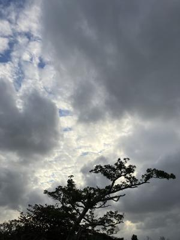

うるがいの話 ある日
最新: アイホンのアップデート【うるがいの話 ある日】とは 一日だけのプログです
『うるがいの話』の最新一日だけのプログで、通信料が少なく経済的だ。カニの画像をクリックすると全ての日付が載る『うるがいの話』サイトを表示します
|
|
【うるがいの話】 うるがい(ｳﾙｶﾞｲ urugai)とは、『もずくがに』の名前でとても大きくなります。 |
|---|---|
|
|
【カミマヤーの話】 猫のことを方言でマヤーといいます。カミマヤー（kamimayaa）とは、神の猫のことです。 |
|
【たながぁの音楽】 たながぁ（ﾀﾅｶﾞｰ tanagaa）とは手長えびのことで、何種類かあり大きいのは車 エビぐらいになります。 |

|
【ぶながぁの話】 ぶながぁ(ﾌﾞﾅｶﾞｰ bunagaa)とは、赤い髪の毛、赤い身体、そして身長は１ｍ２０ｃｍ ぐらい、川の蟹を食べているの目撃された。場所は沖縄県国頭郡大宜味村のと ある村僕の隣近所に住んでいる爺さんから、聞いた話です。 |
|
|
【ギーマの話】 ギーマ(giima)とは、山原の里山に咲くスズランに似た、 花を付けます。実は食べられます、 気が付くと口の周りが紫になっています。 |
2026年01月21日 (水）アイホンのアップデート
15:22

ＬＩＮＥの電話をすると声が小さすぎる、ボリュームを最大にし
ても。いったん通話を止め、スマホの電源を落とし再起動した。
再度電話をすると、もとに音声はいつもの大きさに戻った。
先週、スマホのＯＳ（ｉＯＳ ２６．２）のアップデートがあっ
た。いつもの軽めのアップデートでなく、購入時の初期状態にな
る。あのやがましいＡｐｐｌｅ Ｐａｙの設定を求められた（設
定はしなかったが）。これを、師匠はコールドスタートと表現し
た。お！、まさしく。
コールドスタートと言えば、1週間前にパソコンＰＣ３が、極端
に遅くなったので、『Ｓｈｉｆｔキーを使ったシャットダウン』
で対応した。まさしく、コールドスタート。なぜか翌日にはＰＣ
２が、遅くなり同じくコールドスタートを行った。師匠は知らな
かったが。
昨日から、琉球新報のデジタルビュアで新聞が参照できない状態
にある。ホームページには、
※1/20未明より発生していましたデジタル版にログインできない
不具合は午前9時45分に復旧しました。
ご不便をおかけして申し訳ございませんでした。
とあるのだが・・・、でいつものクロムのブラウザーでなく、エ
ッジのブラウザーだと動作した。その背景には、
サービス運営元変更のお知らせ
2025年12月1日を以て、AEの運営会社が株式会社Sun Asterisk
から株式会社エンハンスに変更となりました。
かな、そしてデジタル新聞をみていると
琉球新報 2026年1月21日 投稿記事より
運転免許センターの方々へ (那覇市、73歳)
昨年8月、ついに高齢者講習の通知が届いた。免許更新するか否か
、非常に悩んだ。というのは40代以降今に至るまでの30年間、私
はマニュアル車のハイエースをずっと運転しているから。
そのため更新の際の実車(ノークラッチの乗用車)に全く自信がな
く、半ば更新を諦めていた。
だが、53年にわたる人生の相棒とも言える免許証と車のことを考
えるとどうにも寂しくて幾度となく喪失感に襲われた。
通知が届いて以後、長く葛藤が続いた。11月、悩みに悩んだ末、
意を決し講習を予約した。 私自身の対応の遅れで近くの自動車
学校は予約が取れず、運転免許センターで全ての講習を受けるこ
とになった。
退職後、中型のバイクの免許をとるため自動車学校へ通ったが、
そこで高齢者に人達が、講習を受けていたのを覚えている。
そして、師匠はマニュアル車のハイエースに乗っている。
お隣さんから電話が『アイパッドがウイルスに感染しているよう
なので』と、で端末をみるとサイトの閲覧で固まってしまって操
作が行えないような状態になっていた。電源を落とし、起動した
パスワードを求められますが、覚えてますか？と尋ねると『神奈
川で、渡されとき・・・？』、え！、やばい、もしかして知らな
いとか・・・・６桁ですよ、しばらく画面をみてたが、ああと６
桁を入力、無事起動する。ブラウザーサワリの閲覧履歴はクリア
した、クッキーなどもクリアすべきだが・・・、マ、とりあえず
は使って見てください。なにかあれば、私はその筋ですからと退
散する（カッコイイ）。